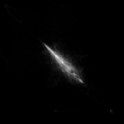
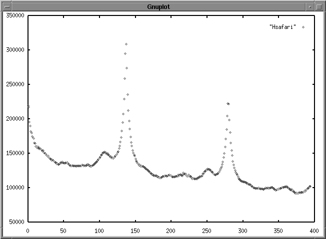
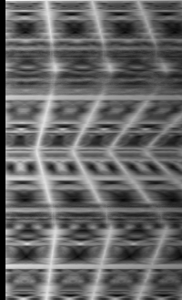
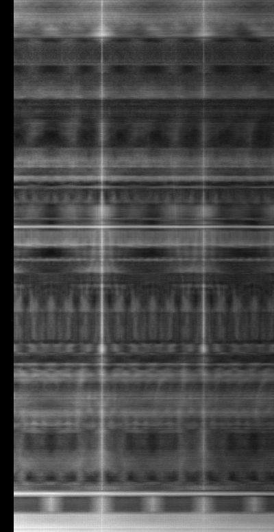

MISE EN EVIDENCE DE L'INFORMATION 3D D'AUTOSTEREOGRAMMES
Cooccurrence.

caribe.ima : Matrice de cooccurrence pour d= 55

safari.ima : Histogramme des sommes selon d

caribe.ima : Matrice des sommes selon la ligne et la distance d

ghost2.ima : Matrice des sommes selon la ligne et la distance d
,